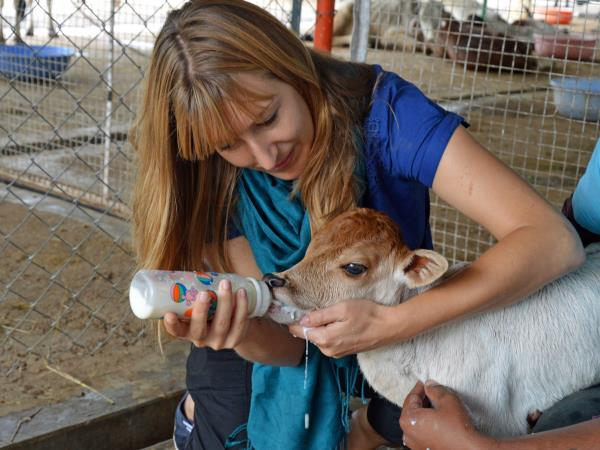

How You Can Help
Volunteer
Volunteers play a critical role at our Wildlife Rescue by increasing our ability to rescue and rehabilitate sick, injured, and orphaned wildlife.
Requirements
- • Must commit to a minimum of 8 hours per month
- • Must be at least 16 years old
- • Children under the age of 18 must be accompanied by an adult
